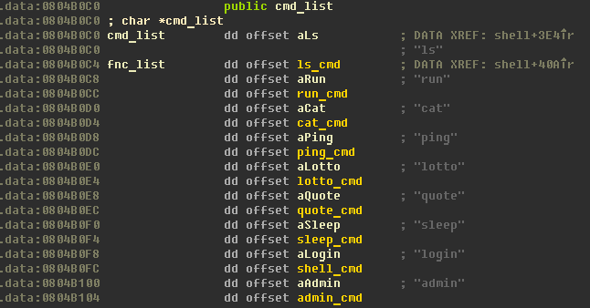

ish (pwn 300)
02.10.2014 00:37, by Dil4rd
Category:
Event:
In this task we have x86 ELF binary ish, which has been run at 54.208.86.14 9988.
This binary is one more Unix shell, but with few commands avaliable:

There is only two intresting commands: lotto and login.
lotto